한줄 요약 — 바퀴의 비홀로노믹 무측면슬립, 관절 작업공간, 지형 접촉, 축소 가능한 지지다각형과 연속 접촉표시자를 동시에 최적화해 HEAP가 crab steering, 전후진 cusp, 3 m 틈 통과, 1 m 단차 등반을 같은 전신 계획기로 생성했으나 결과는 운동학적 계획이며 실기·충돌 검증은 없다.
1.연구 배경 및 동기
주행과 보행을 나누지 않고 굴착기 전신을 동시에 계획하기
바퀴 달린 다리와 굴착 팔을 가진 보행 굴착기는 평지에서 주행하고 큰 틈이나 단차에서는 다리와 삽을 지지점으로 쓸 수 있다. 그러나 운전자는 차체 자세와 다섯 팔다리의 모든 자유도를 동시에 조정해야 하며, 주행과 보행을 별도 행동으로 만든 휴리스틱은 두 모드를 함께 써야 하는 지형에서 해 공간을 제한한다. HEAP는 12,000 kg의 느린 유압장비이므로 동적 점프보다 모든 시점에서 정적 안정성과 운동학적 실행가능성을 보장하는 장주기 계획이 중요하다.
저자들은 차체 위치·자세, 각 말단 위치, 모든 관절각, 각 팔다리의 접촉 구간시간을 연속시간 궤적최적화의 결정변수로 둔다. 바퀴 다리는 접촉 중 구를 수 있지만 옆으로 미끄러지면 안 되고, 삽은 평평한 날로 지면에 닿아야 한다. 지형 높이, 전방기구학, 관절범위, 정적 지지다각형을 하나의 NLP에 넣어 주행·보행과 팔 보조동작이 같은 해 안에서 자연스럽게 나오게 한다.
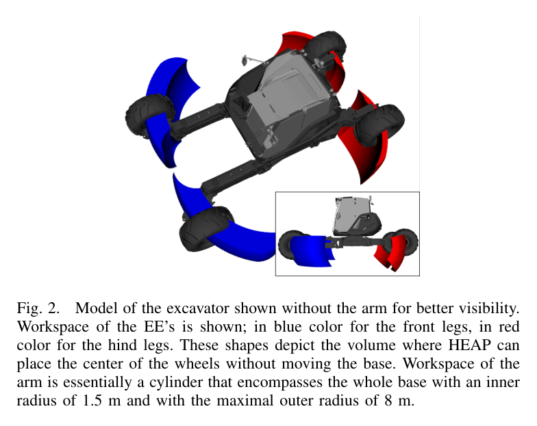
원문 Figure 2 · PDF p.4 — Fig. 2. Model of the excavator shown without the arm for better visibility. Workspace of the EE’s is shown; in blue color for the front legs, in red color for the hind legs. These shapes depict the volume where HEAP can place the center of the wheels without moving the base. Workspace of the arm is essentially a cylinder that encompasses the whole base with an inner radius of 1.5 m and with the maximal outer radius of 8 m.
선행 연구의 한계
기존 leg-wheel 계획은 주행과 stepping을 분리하고 휴리스틱이나 운전자 명령으로 전환해 두 행동을 동시에 최적화하지 못했다.
동적 궤적최적화는 보통 1~2 s 지평선과 점접촉 다리를 대상으로 하며, 느리고 무거운 12 t 굴착기의 긴 지형통과 계획에는 계산부담과 위험이 크다.
지지다각형을 half-space 교집합으로 만들고 안전여유를 위해 축소하는 방식은 접촉점이 최대 5개로 바뀌는 시스템에서 기하계산이 번거롭고 오류에 취약하다.
혼합정수 접촉일정 최적화는 긴 지평선에서 어려우며, 점발용 phase parametrization은 접촉 중에도 위치가 변하는 바퀴 말단에 그대로 적용할 수 없다.
이 연구의 기여
차체와 전 관절·말단을 함께 다루는 legged-wheeled rough-terrain 궤적최적화 정식을 제시하고 바퀴와 삽을 모두 이동 접촉으로 사용할 수 있게 했다.
접촉별 연속 indicator spline과 phase timing을 도입해 일반 NLP 안에서 바퀴 말단의 접촉·스윙 제약과 접촉시간을 최적화했다.
half-space 없이 convex-hull 계수의 합을 1-ε로 줄이는 방식으로 지지영역을 중심 쪽으로 축소하는 직관적 정적 안정 제약을 도출했다.
같은 정식에서 crab steering, cusp, gap crossing, block climbing, 90° 회전과 접촉시간 수정 등 다양한 전신 행동이 나옴을 보였다.
2.방법론 및 시스템 구성
연속시간 최적제어 문제를 direct method로 NLP에 전사한다. 결정변수는 차체의 3차원 위치와 Euler 자세, 각 limb 말단 위치와 관절각, 접촉 phase의 시간이다. 모든 궤적은 3차 다항식 조각을 잇는 Hermite parametrization으로 표현하고, 다항계수 대신 접합점의 상태·속도와 구간시간을 최적화해 지형·관절 제약을 직접 쓰기 쉽게 한다.
해는 동역학 힘을 계산하지 않는 정적 운동학 계획이다. 매 시점 차체 CoM이 접촉점 지지다각형 안에 있고 각 말단이 전방기구학 작업공간과 지형면을 만족해야 한다. 바퀴 접촉은 회전축 방향 속도가 0인 무측면슬립, 삽 접촉은 날 축과 지형법선의 정렬을 강제한다. 비용함수 없이 feasibility만 풀어 튜닝과 계산을 줄이며, 다른 목표자세와 초기 gait가 행동을 결정한다.
처리 파이프라인
1
차체·말단·관절 공동 변수화
차체 pose와 각 limb의 Cartesian 말단 위치 및 joint angle을 동시에 둔다. 말단 위치는 관절로 이미 정해지는 중복변수지만, 지형 제약 초기화를 쉽게 하고 전방기구학 등식으로 정확히 묶는다.
2
Hermite spline 전사
상태와 속도 두 노드를 3차 다항식으로 연결하고 구간시간 ΔT도 변수로 둔다. 노드값에 직접 관절범위·접촉·지형 제약을 걸며 각 limb의 phase duration 합은 총 계획시간과 같게 한다.
3
연속 접촉표시자
limb별 c_i(t)를 0~1 spline으로 만들고 접촉·스윙 전환구간을 제외하면 상수로 제한한다. 활성화해야 할 제약에 indicator를 곱해 바퀴가 접촉 중 구르고 스윙 중 지형을 떠나는 상이한 조건을 한 NLP에서 처리한다.
4
운동학·지형 제약
각 말단은 차체 pose와 관절각 전방기구학을 만족하고 관절상하한 안에 있어야 한다. 접촉 말단의 z는 h_terrain(x,y)와 같으며, 바퀴는 측방속도 0, 삽은 평평한 날 축이 지면 법선과 평행하도록 강제한다.
5
강건 지지다각형
CoM을 접촉점 convex hull의 가중합으로 나타내고 계수합을 1-ε로 둔다. ε=0은 원래 지지다각형, ε가 커질수록 중심으로 축소되며 ε=1에서는 접촉점 centroid 한 점이 된다.
6
Ipopt 해와 행동 생성
C++에서 Ifopt로 Ipopt를 연결하고 HSL 선형해법, RBDL 전방기구학·Jacobian, 해석 미분을 사용한다. 세 가지 초기 gait와 목표자세만 바꿔 주행, 팔 없는 보행, 팔 지지 보행의 timing과 전신 궤적을 푼다.
접촉 바퀴 중심의 속도를 바퀴좌표계로 옮겨 회전축 방향 성분을 0으로 제한한다. 저속이라 접촉점 각속도 항은 생략했다.
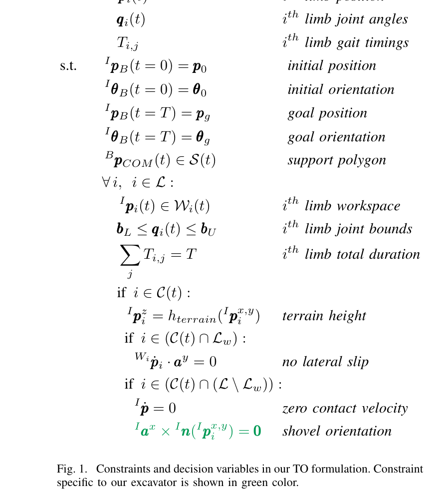
원문 Figure 1 · PDF p.4 — Fig. 1. Constraints and decision variables in our TO formulation. Constraint specific to our excavator is shown in green color.
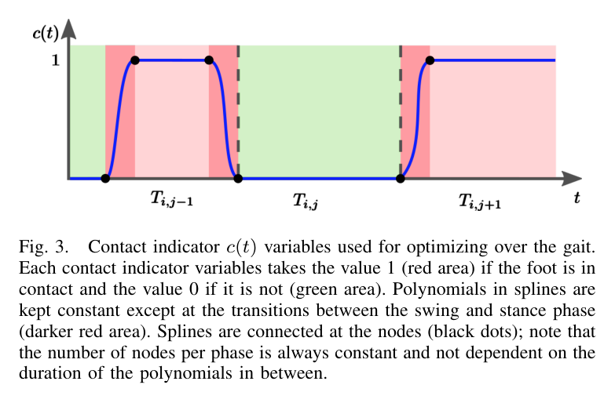
원문 Figure 3 · PDF p.5 — Fig. 3. Contact indicator c(t) variables used for optimizing over the gait. Each contact indicator variables takes the value 1 (red area) if the foot is in contact and the value 0 if it is not (green area). Polynomials in splines are kept constant except at the transitions between the swing and stance phase (darker red area). Splines are connected at the nodes (black dots); note that the number of nodes per phase is always constant and not dependent on the duration of the polynomials in between.
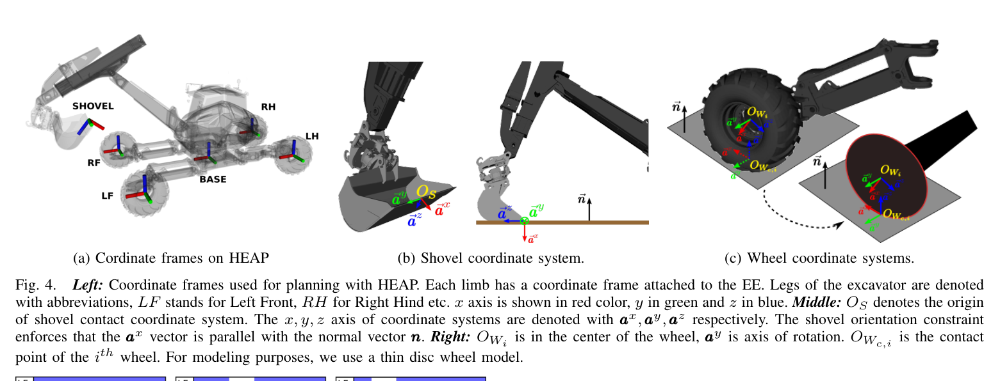
원문 Figure 4 · PDF p.6 — Fig. 4. Left: Coordinate frames used for planning with HEAP. Each limb has a coordinate frame attached to the EE. Legs of the excavator are denoted with abbreviations, LF stands for Left Front, RH for Right Hind etc. x axis is shown in red color, y in green and z in blue. Middle: OS denotes the origin of shovel contact coordinate system. The x, y, z axis of coordinate systems are denoted with ax,ay,az respectively. The shovel orientation constraint enforces that the ax vector is parallel with the normal vector n. Right: OWi is in the center of the wheel, ay is axis of rotation. OWc,i is the contact point of the ith wheel. For modeling purposes, we use a thin disc wheel model.
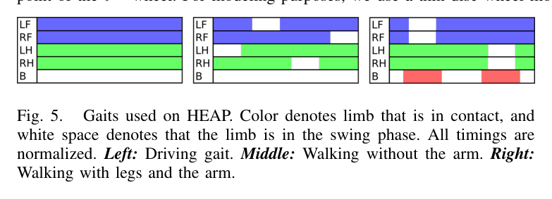
원문 Figure 5 · PDF p.6 — Fig. 5. Gaits used on HEAP. Color denotes limb that is in contact, and white space denotes that the limb is in the swing phase. All timings are normalized. Left: Driving gait. Middle: Walking without the arm. Right: Walking with legs and the arm.
3.핵심 기술
31-DoF 시스템의 joint-Cartesian 혼합 전신 계획
HEAP 다리는 무릎관절이 없어 바퀴 중심 작업공간이 비볼록하고 단순 box로 근사하기 어렵다. 저자들은 말단을 Euclidean 변수로 두는 동시에 관절각을 유지하고 전방기구학 등식으로 묶어 실제 비볼록 작업공간을 보존한다. 이 때문에 차체와 네 다리, 팔을 따로 계획하지 않고 상호 보상하는 움직임을 찾을 수 있다.
정식은 동적 힘 대신 운동학적 실행가능성과 정적 안정에 집중한다. 12 t 장비의 느린 동작에서는 Coriolis 효과를 무시할 수 있고, 위험한 동적 기동을 배제하는 대신 긴 지평선을 계산할 수 있다는 선택이다.
차체·5 limb 공동 최적화
관절범위와 전방기구학 등식
비볼록 말단 작업공간 보존
정적 안정 전 구간 강제
바퀴 접촉까지 포괄하는 연속 gait timing 최적화
점발은 stance 중 위치가 고정되지만 바퀴는 접촉해도 전진한다. 따라서 phase마다 위치를 고정하는 기존 매개화 대신 접촉 indicator로 적용 제약만 전환한다. 접촉 중에는 지형 높이와 무측면슬립을 켜고 스윙에서는 해제하며, phase 순서는 주어진 gait를 따르되 각 지속시간을 연속변수로 바꾼다.
7 s 예제에서 초기 설정은 바퀴 접촉 7 s, 팔 접촉 6 s라 목표에 닿을 수 없었다. 최적화는 팔 driving phase를 2.2 s로 늘려 접촉을 끊고 목표에 도달했다. 이 결과는 고정된 행동 순서 안에서도 timing만으로 운동학적 불가능을 해소할 수 있음을 보여준다.
c_i(t)∈[0,1] contact spline
접촉·스윙 교대
phase 추가·삭제는 불가
일반 NLP로 timing 연속최적화
안전여유를 직접 조절하는 convex-hull 안정 제약
일반 convex hull은 CoM이 경계에 놓이는 해도 허용한다. 제안식은 접촉점들을 centroid 기준으로 축소한 것과 동등하며, half-space와 다각형 오프셋 계산 없이 ε 하나로 허용영역을 줄인다. 90° 보행회전에서 ε=0.5 해가 ε=0보다 CoM-경계 최소거리를 더 크게 유지했다.
보장은 모든 접촉점의 마찰원뿔이 중력 반대방향을 포함할 때 성립한다. 따라서 지나치게 가파른 접촉면에서는 CoM이 투영 지지다각형 안에 있다는 조건만으로 실제 정적 평형을 보장할 수 없다.
접촉점 수 변화에 동일 정식
ε=0 원래 polygon
ε=1 centroid로 퇴화
마찰원뿔 조건 필요
4.실험 결과
실험 환경·장비·데이터
12,000 kg Menzi Muck M545 기반 HEAP의 31-DoF 운동학 모델과 다섯 limb(바퀴 다리 4개+삽 팔 1개)를 사용했다.
C++ 구현, Ipopt NLP, HSL 선형 solver, Ifopt 인터페이스, RBDL 전방기구학·Jacobian과 해석 미분을 사용했다.
결과는 계산된 동작계획의 시각화이며 실제 HEAP 하드웨어 실행 실험은 포함하지 않는다.
실험 프로토콜
driving gait로 (0,0)→(10,10) m 대각 이동과 좌측 5 m 목표를 계획해 crab steering과 전후진 cusp가 나오는지 확인했다.
팔 지지 stepping gait로 폭 3 m 틈과 높이 1 m 블록을 통과하고, walking gait로 90° 제자리 회전을 계획했다.
7 s 목표에서 초기 접촉시간으로 불가능한 문제를 주고 gait timing 최적화가 접촉을 재배치하는지 평가했다.
90° 회전에서 ε=0과 ε=0.5의 CoM-지지다각형 경계 최소거리를 비교했다.
비교 기준
별도 외부 알고리즘 비교군은 제시하지 않았고, 제안 정식 내부에서 ε=0과 ε=0.5 지지다각형을 비교했다.
접촉시간 최적화 전의 infeasible 초기 gait timing과 최적화 후 timing을 비교했다.
평가 지표
계획 지평선 대비 계산시간 비율
통과 가능한 gap 폭과 block 높이
CoM에서 지지다각형 경계까지 최소거리
접촉·driving phase 시간 변화와 목표 pose 도달 여부
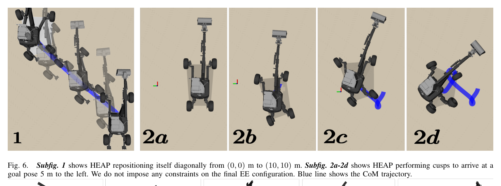
원문 Figure 6 · PDF p.7 — Fig. 6. Subfig. 1 shows HEAP repositioning itself diagonally from (0, 0) m to (10, 10) m. Subfig. 2a-2d shows HEAP performing cusps to arrive at a goal pose 5 m to the left. We do not impose any constraints on the final EE configuration. Blue line shows the CoM trajectory.
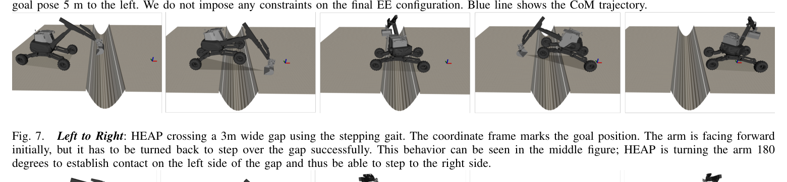
원문 Figure 7 · PDF p.7 — Fig. 7. Left to Right: HEAP crossing a 3m wide gap using the stepping gait. The coordinate frame marks the goal position. The arm is facing forward initially, but it has to be turned back to step over the gap successfully. This behavior can be seen in the middle figure; HEAP is turning the arm 180 degrees to establish contact on the left side of the gap and thus be able to step to the right side.
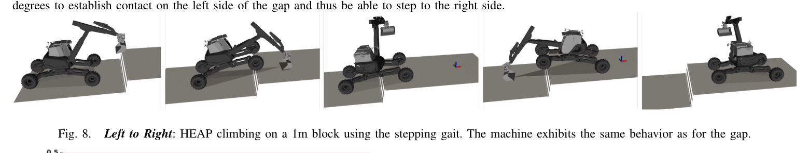
원문 Figure 8 · PDF p.7 — Fig. 8. Left to Right: HEAP climbing on a 1m block using the stepping gait. The machine exhibits the same behavior as for the gap.
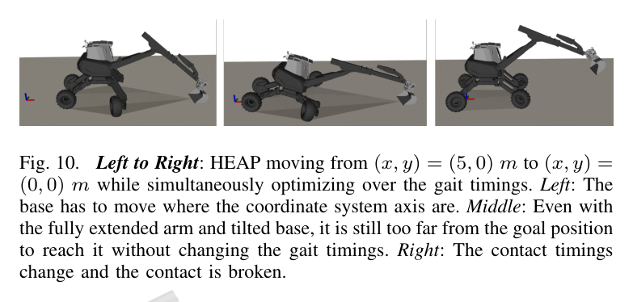
원문 Figure 10 · PDF p.8 — Fig. 10. Left to Right: HEAP moving from (x, y) = (5, 0) m to (x, y) = (0, 0) m while simultaneously optimizing over the gait timings. Left: The base has to move where the coordinate system axis are. Middle: Even with the fully extended arm and tilted base, it is still too far from the goal position to reach it without changing the gait timings. Right: The contact timings change and the contact is broken.
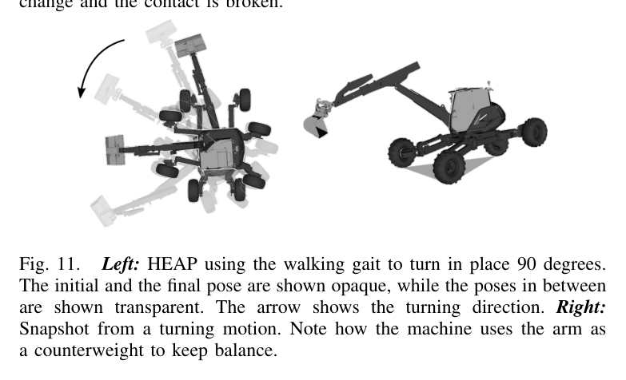
원문 Figure 11 · PDF p.8 — Fig. 11. Left: HEAP using the walking gait to turn in place 90 degrees. The initial and the final pose are shown opaque, while the poses in between are shown transparent. The arrow shows the turning direction. Right: Snapshot from a turning motion. Note how the machine uses the arm as a counterweight to keep balance.
핵심 결과 해석
평지 주행에서 목표의 세부 조향모드를 지정하지 않았는데도 최적화가 (10,10) m 대각 이동을 위한 crab steering과 좌측 5 m 이동을 위한 전후진 cusp를 찾았다. 주행계획 계산시간은 계획 지평선의 약 1/10이었다. 이는 비홀로노믹 무측면슬립과 관절 작업공간만으로 굴착기 특유의 조향행동이 해에서 나온다는 결과다.
거친 지형에서는 3 m 틈을 건널 때 팔을 전방에서 180° 돌려 반대편 지지점으로 사용했고, 1 m 블록 등반에서도 같은 전신 협응이 나타났다. 두 계획 계산시간은 계획길이보다 약 2.5배 짧았다. 90° 제자리 회전은 스윙 다리 반대편으로 팔을 보내 카운터웨이트처럼 쓰며, ε=0.5 안정제약이 CoM을 지지경계에서 더 멀리 유지했다.
접촉일정 예제는 초기 gait timing으로 불가능했던 7 s 동작을 해소했다. 속도한계 1 m/s와 팔 도달범위 때문에 1 s 순수 주행으로는 목표에 못 갔지만, 최적화가 팔 접촉을 끊는 driving phase를 2.2 s로 늘렸다. 이 궤적 계산에는 15 s가 걸려 지평선보다 약 두 배 길었으며 비볼록 접촉최적화의 계산비용도 함께 드러낸다.
정량 결과
평가 항목
정량 결과
조건·맥락
원문 근거
대각 재배치
(0,0) m→(10,10) m
추가 조향모드 지정 없이 crab steering 생성
PDF p.7
측방 목표
좌측 5 m
전후진 cusp를 조합해 목표 pose 도달
PDF p.7
틈 통과
폭 3 m
팔을 180° 돌려 반대편 접촉으로 사용
PDF p.7
단차 등반
높이 1 m
팔을 포함한 stepping gait 계획
PDF p.7
접촉일정 최적화
계획 7 s, 계산 15 s, 팔 driving phase 2.2 s
초기 timing으로 infeasible한 5 m 이동 문제
PDF p.8
실패 사례와 경계조건
gradient 기반 Ipopt는 비볼록·비연결 지형 제약에서 국소최소에 갇히며 초기 contact schedule 품질에 민감하다.
gait phase의 지속시간은 바꿀 수 있지만 phase 자체를 추가하거나 제거하지 못하므로 초기 행동순서가 틀리면 해를 찾지 못할 수 있다.
충돌검사가 없어 1 m 블록을 오를 때 다리가 지형과 충돌하는 계획이 관찰됐다.
실제 유압 대역폭·슬립·센서오차·동역학을 실행 검증하지 않아 계산 궤적의 실현가능성은 입증되지 않았다.
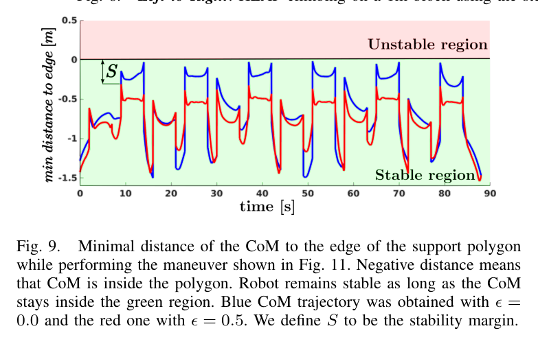
원문 Figure 9 · PDF p.7 — Fig. 9. Minimal distance of the CoM to the edge of the support polygon while performing the maneuver shown in Fig. 11. Negative distance means that CoM is inside the polygon. Robot remains stable as long as the CoM stays inside the green region. Blue CoM trajectory was obtained with ϵ = 0.0 and the red one with ϵ = 0.5. We define S to be the stability margin.
5.한계 및 향후 연구
현재 한계
운동학적·정적 계획이며 질량관성, 유압지연, 접촉력과 지반변형을 포함하지 않는다.
결과는 계획기 출력 시각화로만 검증되었고 실제 HEAP의 driving·stepping 실행은 없다.
환경·자기충돌 제약이 없어 지형과 다리의 충돌을 허용할 수 있다.
접촉면이 너무 가파르면 지지다각형 조건이 실제 정적평형을 보장하지 못한다.
gradient NLP와 고정 phase 순서 때문에 초기값·국소최소 문제가 있고 일부 timing 최적화는 지평선보다 오래 걸렸다.
향후 연구
저자들이 계획한 대로 실제 HEAP에서 driving과 stepping 동작을 실행해 추종성과 안전성을 검증한다.
signed distance field와 충돌검사를 넣어 조작과 볼록장애물 stepping에서 몸체-지형 충돌을 배제한다.
sampling 기반 방법으로 비볼록 지형에 맞는 초기 contact schedule을 찾아 gradient solver의 국소최소와 계산시간을 줄인다.
모든 limb가 비접촉이고 차체가 지면에 닿는 phase 등 운전자가 쓰는 새로운 gait phase를 생성할 수 있게 확장한다.
실차 적용에는 유압·슬립·접촉 불확실성을 반영한 짧은 지평선 재계획 또는 추종제어가 추가되어야 한다.
같은 정식이 crab·cusp·3 m gap·1 m block·90° 회전과 infeasible timing 복구를 생성했다.
한계는?
운동학 계획만 계산했으며 충돌, 동역학, 유압, 지반 슬립과 실제 HEAP 실행은 검증하지 않았다.
#작업·궤적계획#제어·MPC#전신 궤적최적화#Hermite spline#접촉일정 최적화
나의 의견 / 우리 연구와의 연관성
굴착기는 작업장에 도달하는 이동과 버킷 작업을 분리하면 차체 재배치 횟수가 늘고 거친 지형에서 접근 불가능 판정이 쉽게 발생한다. 이 논문처럼 팔을 다섯 번째 지지 limb로 포함한 전신계획은 차체 안정화, 장애물 통과, 작업자세 확보를 한 문제에서 다룰 수 있어 보행 굴착기의 고유 능력을 활용한다.
다만 실제 자율굴착 파이프라인에서는 이 오프라인 운동학 해를 그대로 명령하기보다 고도지도·충돌장·지지력 추정과 결합한 기준궤적으로 사용해야 한다. 하위 전신제어기 또는 MPC가 유압지연과 접촉오차를 보정하고, 계획기는 새 지형관측마다 warm start로 갱신하는 구조가 현실적이다.
삽을 굴착도구뿐 아니라 지지점·카운터웨이트로 쓰면 작업장 접근과 차체 자세 확보의 feasible set이 넓어진다.
ε 기반 안정여유는 적재량·지반신뢰도에 따라 보수성을 조절하는 전복위험 비용으로 확장할 수 있다.
contact timing 연속최적화는 주행-보행 전환을 사람이 정한 거리 임계값보다 기구학적으로 일관되게 결정한다.
실차 적용 전 충돌 SDF, 지반 마찰·침하, 유압속도 한계와 온라인 재계획을 반드시 추가해야 한다.
7.전체 그림·표
본문 핵심 위치에 배치하지 않은 원문 Figure와 Table을 원문 페이지 순서로 수록한다.
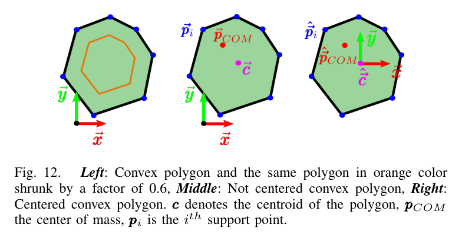
원문 Figure 12 · PDF p.8 — Fig. 12. Left: Convex polygon and the same polygon in orange color shrunk by a factor of 0.6, Middle: Not centered convex polygon, Right: Centered convex polygon. c denotes the centroid of the polygon, pCOM the center of mass, pi is the ith support point.